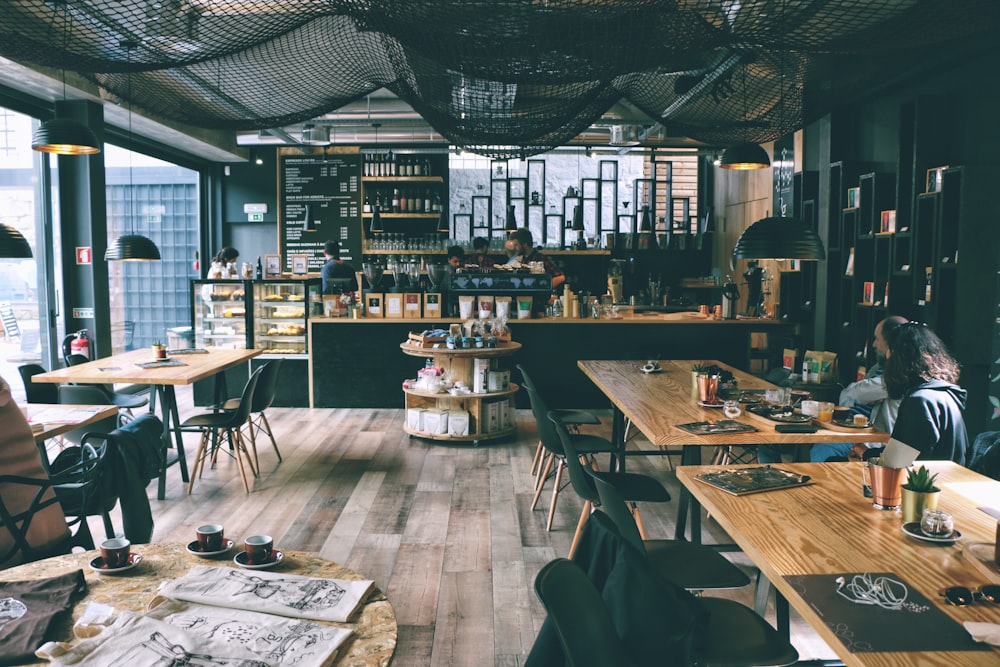

Hospitalidad sin prisa
Las mesas son para quedarse. Leé, charlá o mirá la lluvia: acá el tiempo corre distinto.
Un local nacido del amor por el café bien hecho y las historias que se cuentan de noche.
El Caldero Chorreante abrió sus puertas en 2024 en un local reciclado de Palermo. La idea era simple: un lugar donde pudieras pedir un chocolate espeso, sacar un libro del estante y quedarte sin que nadie te apure la cuenta.
El nombre es un guiño a las tabernas del mundo mágico, pero el proyecto es 100% independiente: granos de especialidad argentinos, pastelería de autor y una librería curada por lectores reales, no por algoritmos.

Tres principios que se sienten en cada mesa.
Las mesas son para quedarse. Leé, charlá o mirá la lluvia: acá el tiempo corre distinto.
Baristas formados y recetas probadas. Los nombres son divertidos; el café, serio.
Eventos abiertos, estantes rotativos y recomendaciones hechas por humanos.
Las caras detrás del caldero.
Fundadora & barista
De Córdoba a Palermo con una obsesión: el espresso perfecto y las sagas interminables.

Librero jefe
Curador de estantes y anfitrión del club de lectura. Si no sabe el título, lo inventa… y después lo encuentra.
Pastelería
Brownies, tartas y scones con magia de manteca. Dice que la verdadera poción es el azúcar mascabo.